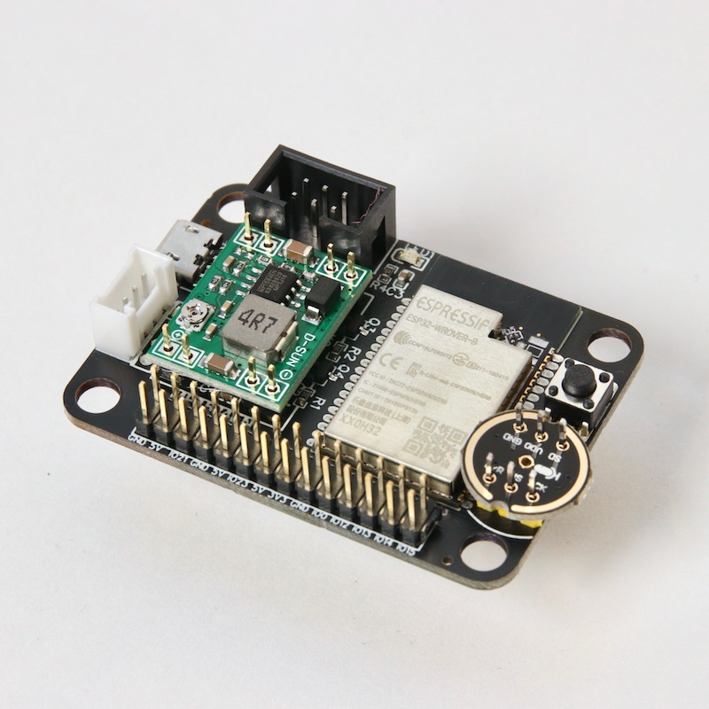

Assembling the ESP32-wifi board
Your bord comes flashed with the lasted micropython. It includes our
boot.py
that creates a WiFi Access point called ESP-AP. The password is
micropythoN. When you’re connected, you can use a
WebREPL to program your board. Just press
enter when it asks for a password. There is none.
Just build it, like in the image below. Double check these:
The orientation of the Buck converter. The 4R7 on the side of the 16 pin header.
The orientation of the microphone. The icon faces upward and points toward the board.
The orientation of the black 6 pin port. The small opening on the side should face inward.
The switch is optional. You can reset via usb or power-cycle.
IMPORTANT NOTE! In the picture below, I did not add solder because I was in a hurry to get it photographed. To be clear: You DO need to solder it.
